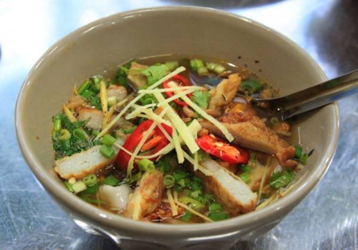
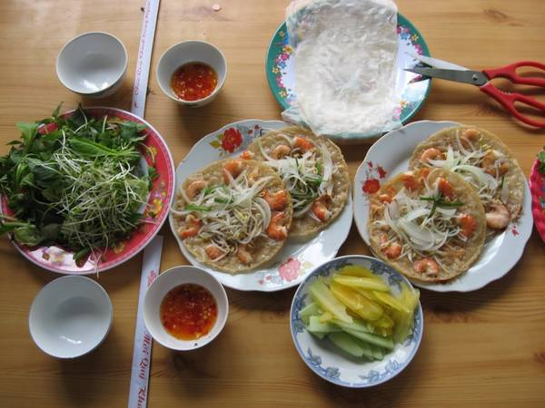
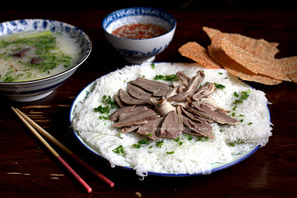
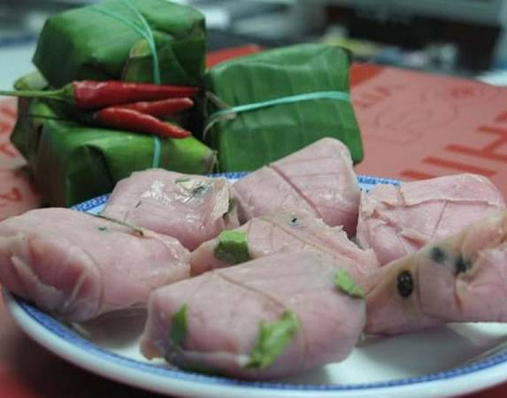
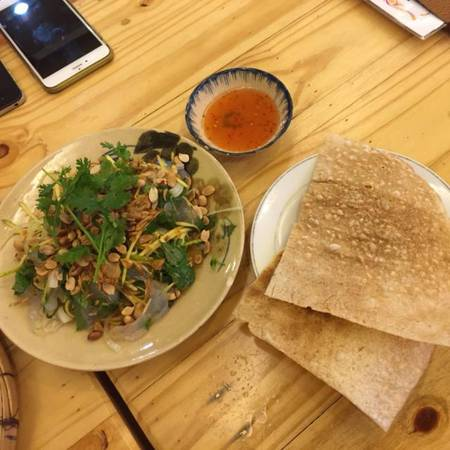
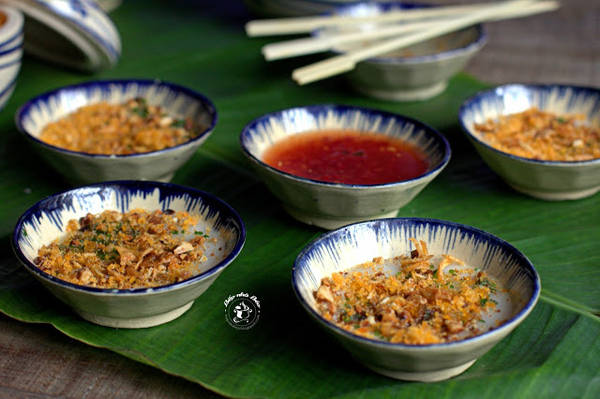
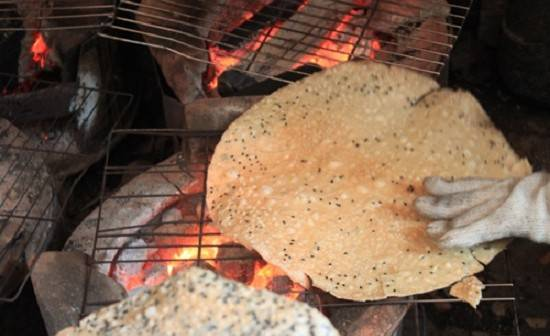
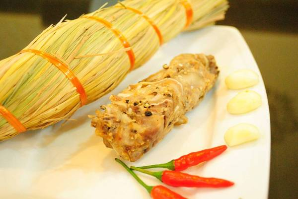
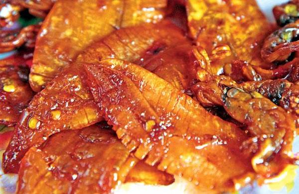
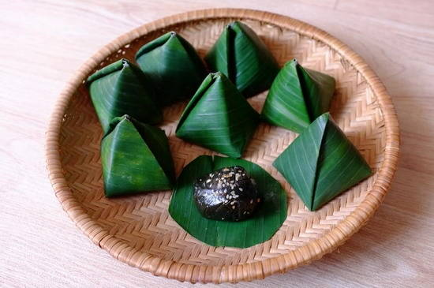

Bánh canh chả cá là đặc sản khá nổi tiếng ở Quy Nhơn, được bày bán ở nhiều con phố. Sự độc đáo của bánh canh chính là cách làm bánh, chả và chế biến nước dùng. Chả cá ở đây được chế biến hoàn toàn từ cá tươi với nhiều gia vị. Còn sợi bánh làm bằng bột gạo pha với bột mì, khi chín có độ dai và màu trong rất lạ. Nước dùng chủ yếu nấu bằng xương cá, đầu cá tạo ra cái ngọt thanh thanh, để lại cho người ăn cảm giác khó quên.
Là món bánh dân dã được rất nhiều người yêu thích, bánh xèo được làm từ bột gạo có quyện một chút bột nghệ và nước cốt dừa. Phần nhân bao gồm tôm đất nhỏ nhưng chắc thịt. Đĩa bánh xèo dọn ra với sắc màu vàng của nghệ, màu trắng phau của giá, màu đỏ của tôm và màu xanh của rau hòa quyện thành một món ăn đẹp mắt.
Bánh hỏi là đặc sản Bình Định, tới Quy Nhơn du khách sẽ thấy nhan nhản những biển hiệu cháo lòng, bánh hỏi. Thật ra bánh hỏi, cháo lòng là hai món ăn khác nhau nhưng lại được người dân kết hợp với nhau tạo nên món ăn thú vị. Bánh hỏi là biến thể của bún tươi. Còn cháo được nấu khá loãng, bằng huyết ninh với nước cốt hầm từ xương và lòng lợn. Cháo vừa ngọt lại vừa thơm, ăn cùng với đĩa lòng lợn được chế biến khéo léo khiến món ăn này trở nên ngon ngọt khác thường.
Nem chợ huyện ngon do cách chế biến một phần nhưng yếu tố chính ở đây vẫn là thịt được chế biến từ heo cỏ nuôi dân dã. Nem có thể ăn với rau thơm, cuốn với bánh tráng, hoặc chỉ ăn mỗi nem để tận hưởng hương vị độc đáo của món đặc sản này. Nem khi được ăn chấm với nước mắm hay nước tương tùy theo khẩu vị của mỗi người. Tuy nhiên, nước chấm được ưa thích nhất vẫn là nước chấm được pha loãng với lạc giã nhỏ thêm đường và tỏi, ớt khiến nước chấm sánh, đậm đà.
Gỏi sứa tai và gỏi sứa chân là món ăn được nhiều du khách đến Bình Định ưa thích. Gỏi sứa tai được làm từ sứa tai bóp sơ sau đó trộn cùng các loại gia vị, đậu phộng, chuối xanh, mướp đắng xắt mỏng, xoài xanh bào sợi và các loại rau thơm như rau răm, rau húng. Để làm gỏi sứa chân cầu kỳ hơn vì phải trộn cùng với thịt gà hoặc thịt lợn xắt mỏng cùng các loại ớt, xoài băm nhỏ, đậu phộng rang và một số loại rau thơm khác. Món ăn này sẽ ngon hơn nếu được chấm với mắm ruốc.
Bánh bèo chén được làm từ bột gạo, tạo khuôn bằng những chiếc chén nhỏ. Mỗi chiếc bánh bèo chén Quy Nhơn chỉ có đường kính khoảng 2 đốt ngón tay. Giữa lòng chiếc bánh có một lỗ lớn, hõm xuống như má lúm đồng tiền. Mỗi đĩa bánh bèo thường được bày khoảng 10 chiếc nhỏ xinh, trắng muốt, thơm mùi gạo, dai và không hề bở. Sau đó người chế biến sẽ rắc ruốc tôm, đậu phộng giã nhỏ và hành lá lên trên, cuối cùng là chan nước chấm và rắc thêm vài mẩu bánh mì chiên giòn.
Là địa phương có nhiều ao, đầm nên Bình Định đã tạo môi trường sống thuận lợi cho nhiều loài cá đặc sản, trong đó có cá chình. Cá chình có thể chế biến nhiều món khác nhau, nhưng người dân bản địa và cả thực khách đều khoái khẩu nhất với món gỏi cá chình. Gỏi cá chình là một món ăn được chế biến vô cùng công phu từ việc chọn cá tươi sống đến công đoạn tẩm ướp gia vị sao cho vừa miệng nhất. Gỏi cá chình được xúc ăn với bánh tráng nướng và nước mắm giã gừng.
Các quán ăn hải sản dọc đường Xuân Diệu có rất nhiều, bạn có thể tùy thích lựa chọn.
- Bánh hỏi lòng heo:
- Bún cá Phượng Tèo
- Các cửa hàng chuyên bán đặc sản
Bánh tráng nước dừa là một trong những đặc sản được nhiều người yêu thích và mua về làm quà mỗi khi ghé Quy Nhơn. Điều đặc biệt là bánh tráng dừa chỉ ăn riêng chứ không dùng kèm các món khác như bánh tráng mè thông thường.
 TréTré Bình Định được tạo hình như những chiếc “cán chổi” nhỏ xíu. Đây là một trong những “mồi nhậu” của người dân bản địa khi uống rượu bầu đá. Nguyên liệu để làm nên tré là thịt tai, thịt đầu, thịt ba chỉ cùng với mè, thính, riềng, ớt, lá ổi non và tỏi. Khi thưởng thức, chỉ cần bóc lớp vỏ bên ngoài là có thể ăn ngay. Món này thường được cuốn với bánh tráng cùng các loại rau sống, chấm mắm.
 Mực ngào tỏi ớtKhông khó để tìm mua mực ngào tỏi ớt bởi chúng được bán ở hầu hết các quán hàng ven biển hoặc trong thành phố. Để làm món này, khô mực sau khi nướng sơ sẽ tẩm các loại gia vị như mạch nha, ớt xào, tỏi… cho ngấm đều. Món ăn với đủ vị cay, mặn, ngọt mang đậm hương vị biển Quy Nhơn, rất thích hợp làm quà biếu hoặc mồi nhậu trong những buổi tụ tập bạn bè.
 Bánh ít lá gaiLà thứ bánh đơn sơ, mộc mạc và hồn hậu như con người đất võ nhưng hương vị ngọt lành của bánh ít lá gai luôn hấp dẫn du khách. Bánh ít lá gai được sử dụng trong những ngày giỗ, ngày lễ như cưới hỏi, thể hiện sự đảm đang khéo léo của người phụ nữ. Bánh được làm bằng bột nếp với lá gai và đường cát, nhân bánh làm bằng đậu xanh hoặc dừa nạo. Bánh ít lá gai dẻo, thơm, ăn không dính răng với vị ngọt của đường, vị thơm của nếp, vị bùi của đậu xanh, hương cay nồng của gừng tạo thành một món ăn đậm đà hồn quê Bình Định.
